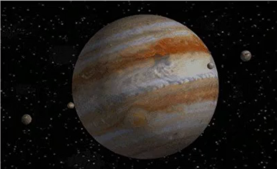
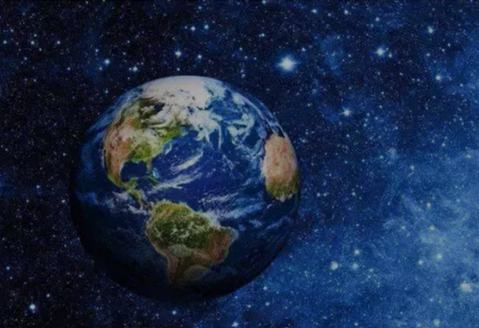

星球介绍
木星

木星(Jupiter)
是太阳系八大行星中体积最大、自 转最快的行星，从内向外的第五颗行星。它的质量为太阳 的千分之一，是太阳系中其它七大行星质量总和的2.5 倍。由于木星与土星、天王星、海王星皆属气体行星，因 此四者又合称类木行星（木星和土星合称气态巨行星） 木星是一个气态巨行星，占所有太阳系行星质量的 70%,主要由氢组成，占其总质量的75%，其次为氦， 占总质量的25%，岩核侧含有其他较重的元素。人类所 看到的通常是大气中云层的顶端，压强比1个大气压略 高。
地球

地球(Earth)
是太阳系八大行星之一，按离太阳由 近及远的次序排为第三颗，也是太阳系中直径、质量和密 度最大的类地行星，距离太阳1.5亿公里。地球自西向东 自转，同时围绕太阳公转。现有40~46亿岁，[1]它有一 个天然卫星一月球，二者组成一个天体系统一地月 系统。46亿年以前起源于原始太阳星云。